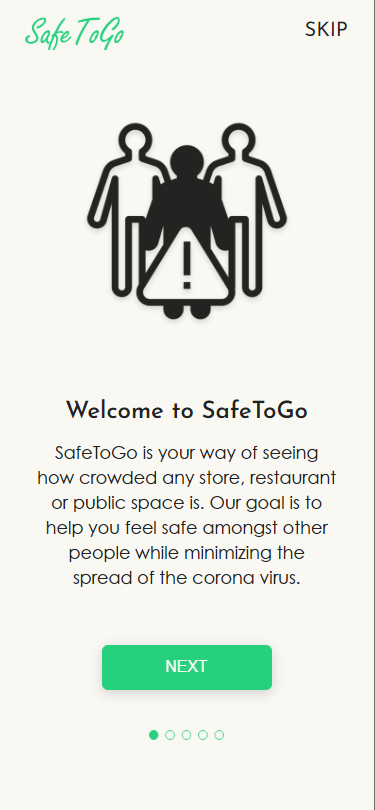
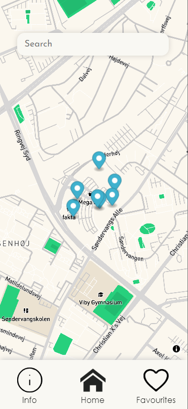

Project description
We live in a strange times, we were practicly forced to sit at homes and being separated from our families for really long times. We needed to adapt to new normal asap otherwise we are risking not only our health but also our realtives. Fortunetly for us we live in a 21st century and we have technology on our side and that's where SafeToGo steps in, the app that helps you check if the place is or will be crowded.
Purpose
Even though these times can be challenging you have to remember you are not alone. We saw many situation in which people bonded over the time of pandemic. Thanks to SafeToGo app you don't need to stress about going out for your groceries, just open the app enter location and check if it is crowded.
Features
The most accesible thing that the app such as ours could have is map so we implemented it along with some additional stuff that we thought can improve the UX of the app. The thimgs as searchbar and suggested places nearby were really neccessary for that kind of app.
We wanted to make the app as accessible as it is possible fo everybody so we planned to use a lot of visuals. We decided that it would be great for users to get the response right away if the place is safe so we made the popup of the place change colour to it's assigned busyness.
Another step to accessibility is this secton that pops up when user wants to know more datils about the place. The pin on the gradient moves together with the live busyness of the place. The charts below helps with planning f. e. day and when it is recommanded to go shopping or hang out.
We all have our favourite places to visit or places that we go often, so having them in one place was a must have for us if on the details pop up you mark a place to be added to your favourites it will be saved and monitor the busyness at all times.